100 anos Carlos Wallenstein
Programa das comemorações do centenário · Lisboa e Ponta Delgada · Novembro de 2026
O programa que celebra o 100.º aniversário de Carlos Wallenstein evoca a sua obra em quatro momentos, formatos e espaços distintos. Envolve os filhos – Pedro, José, Madalena e Miguel – e os netos – Catarina, Tomás, Afonso, Vicente, Laura e António – e vive também da cumplicidade com a Comuna Teatro de Pesquisa, a Cinemateca Portuguesa, a Universidade dos Açores e o CHAM – Centro de Humanidades (UNL/UAc), a Biblioteca Pública e Arquivo Regional de Ponta Delgada e o Arquipélago de Escritores, assim como de muitas colaborações.
Programa geral
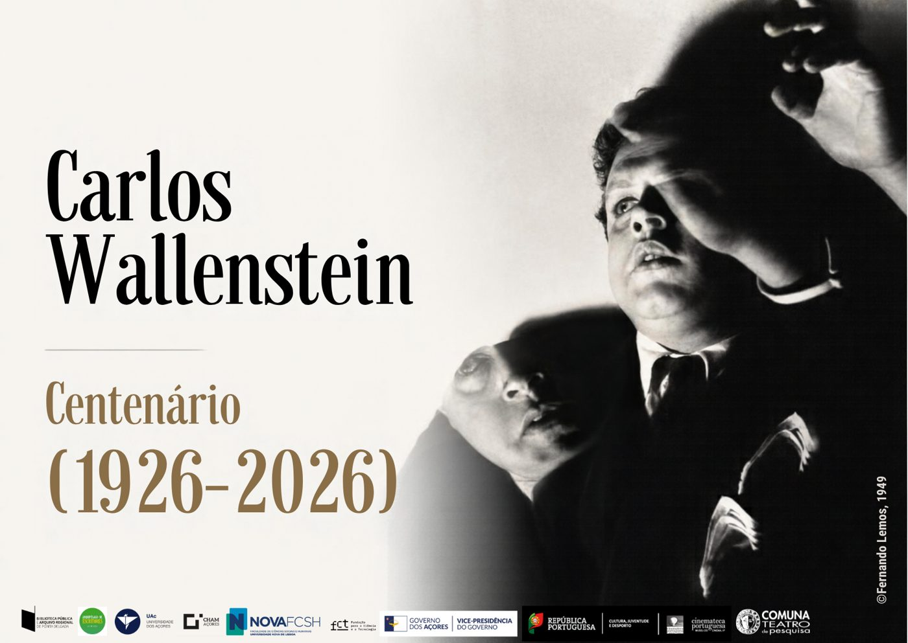
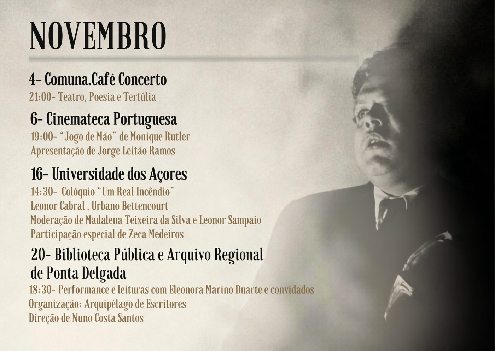
Lisboa
-
4 nov
21h00Comuna Teatro de Pesquisa · Café-Concerto- 21h – Leitura da peça radiofónica Os Fantasmas como Prumo das Decisões Domésticas e a sua Influência nas Emergências Vivenciais, de Carlos Wallenstein, com Afonso Wallenstein, António Wallenstein, Catarina Wallenstein, José Wallenstein, Laura Wallenstein, Madalena Wallenstein, Miguel Wallenstein, Pedro Wallenstein, Tomás Wallenstein e Vicente Wallenstein.
- 21h45 – Intervalo.
- 22h – Abertura: leitura aberta de poesia de Carlos Wallenstein e dos seus contemporâneos e companheiros surrealistas.
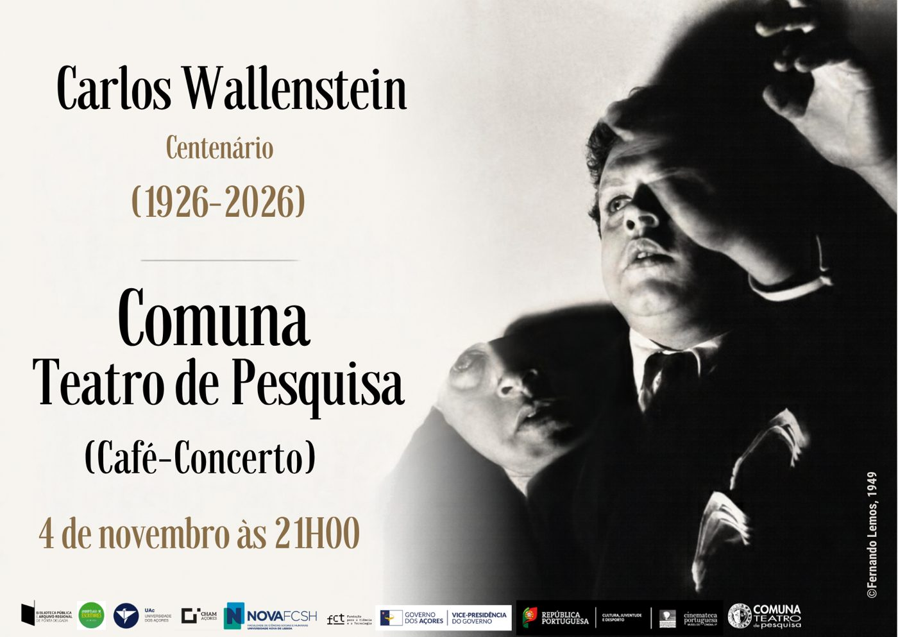
Cartaz 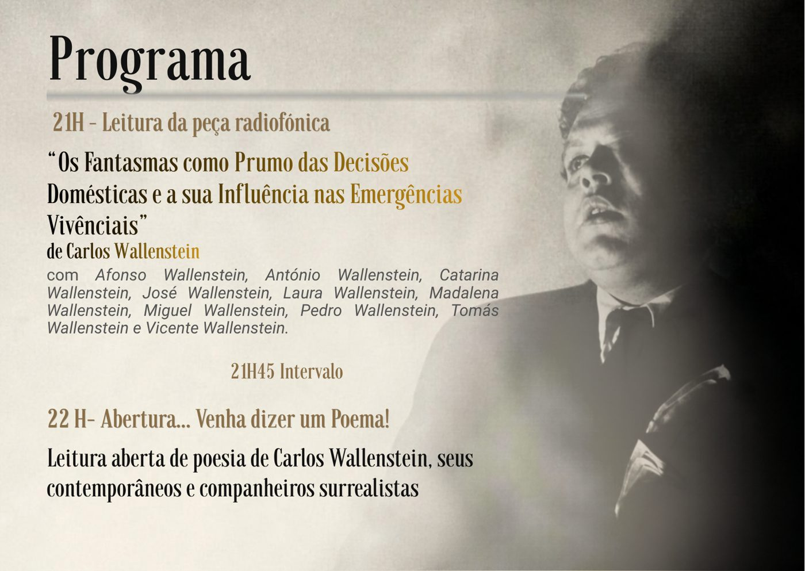
Programa -
6 nov
19h00Cinemateca PortuguesaJorge Leitão Ramos – abertura da sessão e introdução ao filme Jogo de Mão, de Monique Rutler (1983).
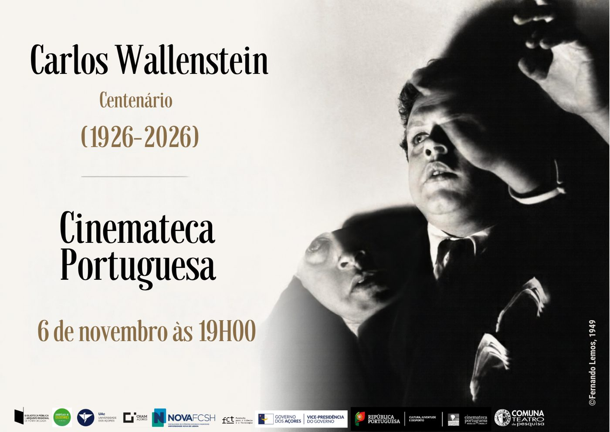
Cartaz 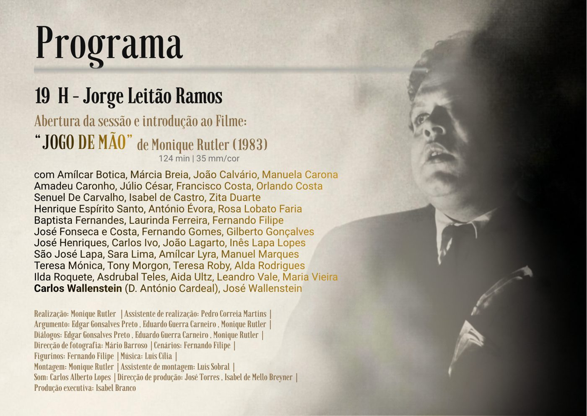
Programa
Ponta Delgada
-
16 nov
14h00Universidade dos Açores · CHAM · Anfiteatro VIII«Um Real Incêndio» – Colóquio Comemorativo do Centenário do Nascimento de Carlos Wallenstein.
- 14h15 – Recepção dos convidados.
- 14h30–14h45 – Sessão de abertura, com a presença da Magnífica Reitora da Universidade dos Açores.
- 14h45–16h20 – Olhares sobre a obra de Carlos Wallenstein (moderação: Madalena Teixeira da Silva)
- 14h45–15h05 · Carlos Wallenstein: testemunhos do próprio e da família.
- 15h05–15h25 · Carlos Wallenstein – o poeta e a cidade, Urbano Bettencourt (CEHu).
- 15h25–15h45 · Entre convenção e experimentação: o teatro radiofónico de Carlos Wallenstein, Leonor Cabral (Faculdade de Letras da Universidade de Lisboa, Centro de Estudos de Teatro).
- 15h45–16h05 · O humor e o absurdo nos contos de Carlos Wallenstein, Leonor Sampaio da Silva (CHAM – Centro de Humanidades, NOVA/Universidade dos Açores).
- 16h05–16h20 · Debate.
- 16h20 – Intervalo.
- 16h30–17h30 – Diga lá um poema (moderação: Leonor Sampaio da Silva)
- 16h30–16h35 · Carlos Wallenstein, poeta e diseur de si mesmo.
- 16h35–16h50 · Poesia pelos netos (Afonso Wallenstein, António Wallenstein, Catarina Wallenstein, Laura Wallenstein, Tomás Wallenstein e Vicente Wallenstein).
- 16h50–17h00 · Poesia por alunos da Universidade dos Açores.
- 17h00–17h15 · Três poemas por Zeca Medeiros.
- 17h30 – Encerramento do colóquio.
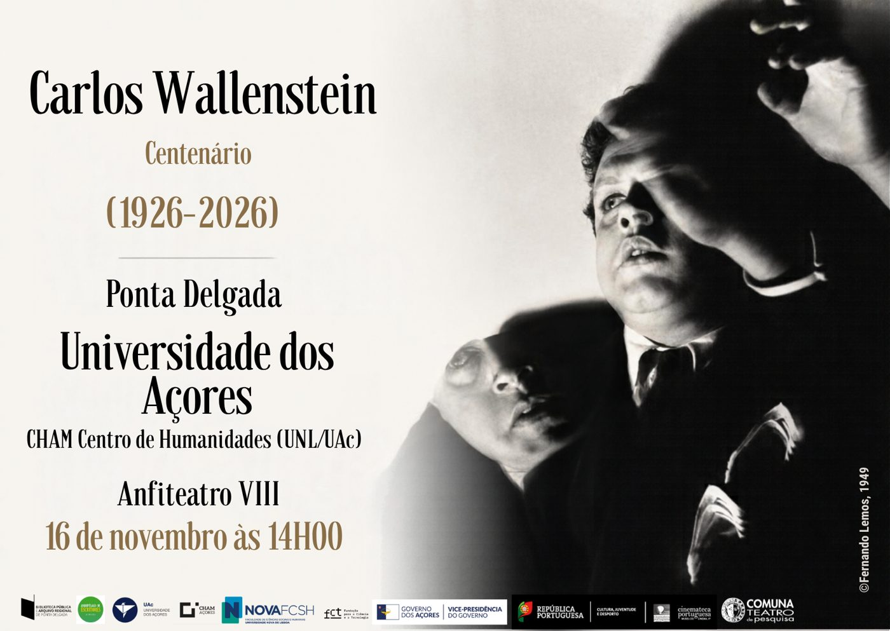
Cartaz 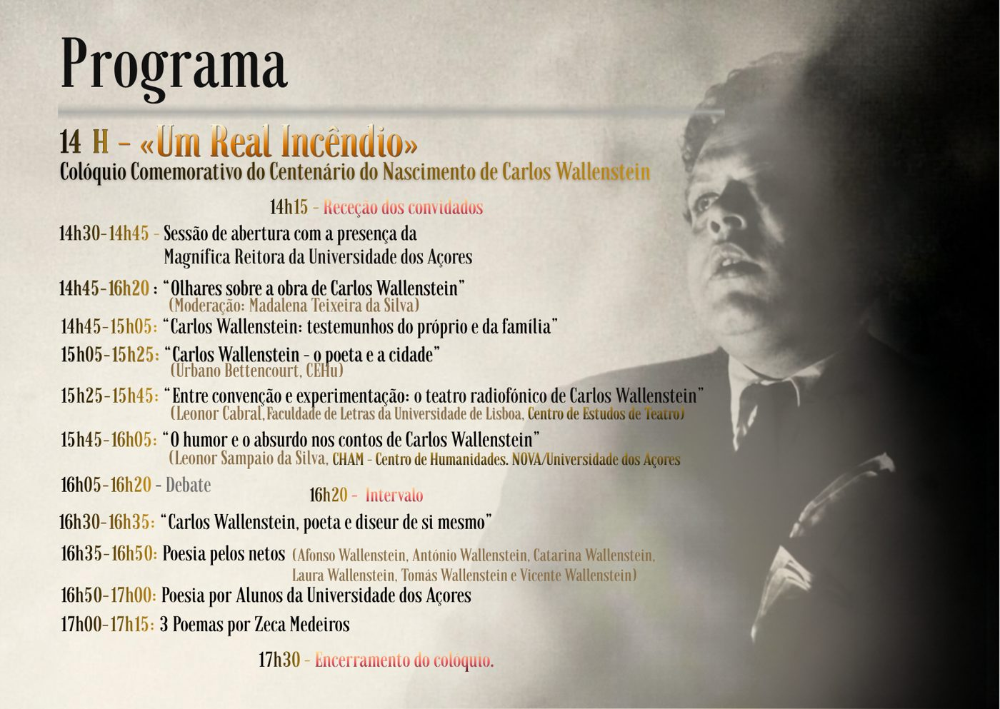
Programa -
20 nov
18h30Biblioteca Pública e Arquivo Regional de Ponta Delgada · Nas Cavalariças«Carlos Wallenstein: o Real Transgressor» – performance e leituras com Eleonora Marino Duarte e convidados.
Organização: Arquipélago de Escritores. Direcção de Nuno Costa Santos.
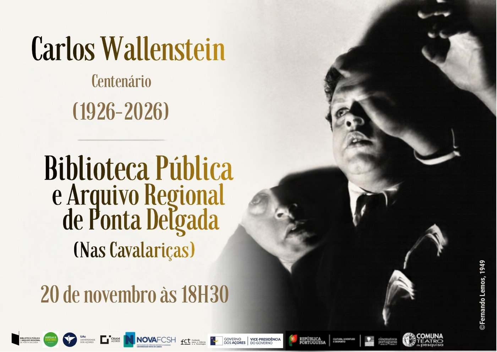
Cartaz 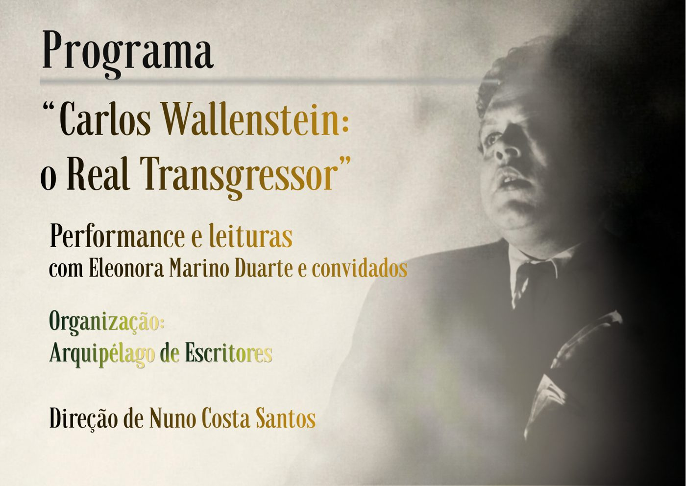
Programa
Parceiros e apoios
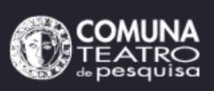
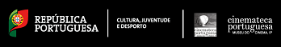
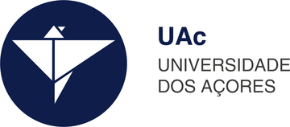
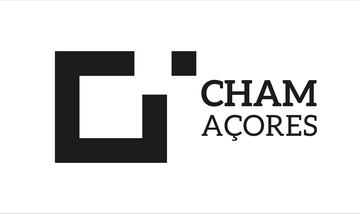
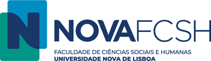
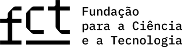
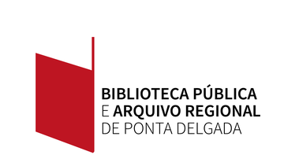
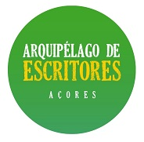